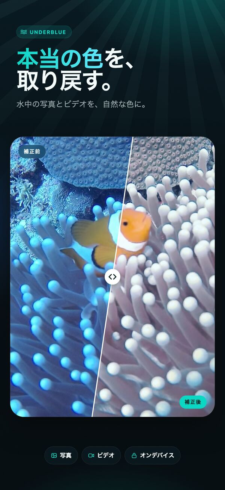
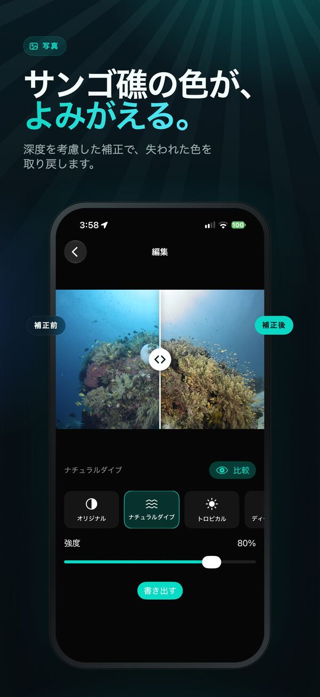
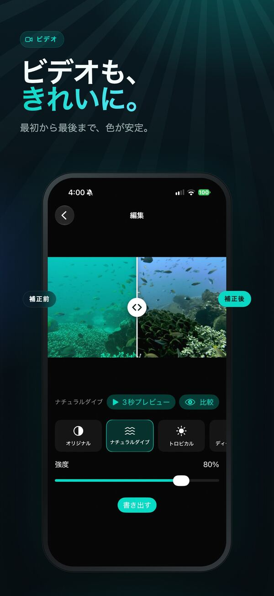
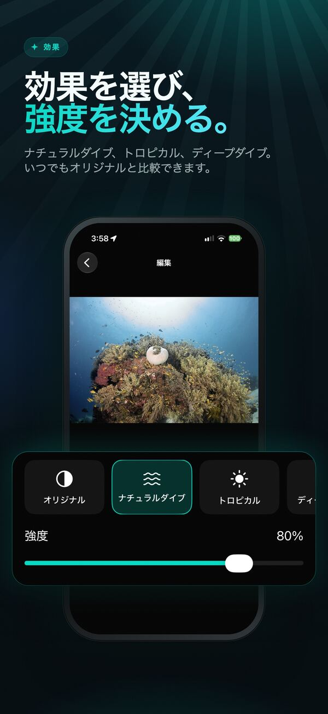
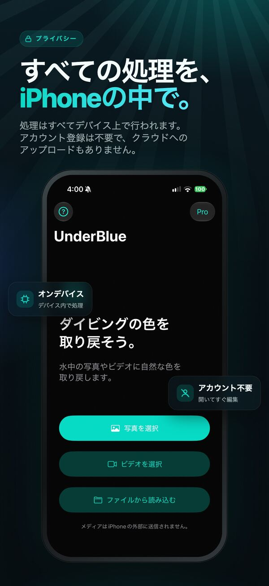

水中写真とビデオの色を取り戻す
iPhone上で完結する、深度を考慮した補正で、水中の写真とビデオに自然な色と鮮明さを取り戻します。

UnderBlueは、水中の写真とビデオに自然な色と鮮明さを取り戻します。
写真やビデオを読み込んで効果を選び、オリジナルと比較してみましょう。効果の強度を調整したり、「カスタム」で明るさ・コントラスト・彩度・明瞭度・色温度を自分で設定したりできます。UnderBlueは深度を考慮した水中補正で、色の減衰と、浮遊物による白いもや（後方散乱）を抑えます。仕上がりは自然で、ビデオでも色が安定します。





主な機能
- ナチュラルダイブ、トロピカル、ディープダイブの3つの効果
- 5つの調整スライダーを備えた「カスタム」
- 深度を考慮した写真とビデオの補正
- フレーム間で色を安定させるビデオ補正
- 元の解像度・4Kでのビデオ書き出し（UnderBlue Pro）
- SDR、および対応環境でのHLG/PQ HDRビデオ出力
- ゲインマップ付きHDR写真の書き出し（UnderBlue Pro）
- 「写真」アプリ、「ファイル」アプリ（カメラのRAWを含む）、共有シートから読み込み
- 元のフレームレート、タイミング、向き、音声を維持
- アカウント不要、クラウドへのアップロードなしの完全オンデバイス処理
水中写真・水中動画ガイド
 水中写真の撮り方：鮮やかでクリアに撮るコツスマホやカメラで水中写真をきれいに撮るコツを紹介します。被写体に近づく、光を選ぶ、浮遊物の写り込みを防ぐ、ダイビング後に色を補正する。
水中写真の撮り方：鮮やかでクリアに撮るコツスマホやカメラで水中写真をきれいに撮るコツを紹介します。被写体に近づく、光を選ぶ、浮遊物の写り込みを防ぐ、ダイビング後に色を補正する。 水中動画の撮り方：なめらかで安定した色鮮やかな映像にスマホやアクションカメラで水中動画をきれいに撮る方法です。ゆっくり動く、しっかり構える、クリップは短く、被写体に近づく、撮影後に色を補正する。
水中動画の撮り方：なめらかで安定した色鮮やかな映像にスマホやアクションカメラで水中動画をきれいに撮る方法です。ゆっくり動く、しっかり構える、クリップは短く、被写体に近づく、撮影後に色を補正する。 スマホ防水ハウジングの使い方シュノーケリングやダイビングで使うスマホ防水ハウジングの使い方です。耐水スマホだけでは足りない理由、水漏れの確認、水中写真・水中動画をきれいに撮るコツ。
スマホ防水ハウジングの使い方シュノーケリングやダイビングで使うスマホ防水ハウジングの使い方です。耐水スマホだけでは足りない理由、水漏れの確認、水中写真・水中動画をきれいに撮るコツ。 アクションカメラの水中撮影：潜る前の確認ポイントアクションカメラで水中撮影をする前に、耐水深度、パッキン、曇り、バッテリー、カラーフィルターを確認しましょう。撮影後はiPhoneで映像の色を補正できます。
アクションカメラの水中撮影：潜る前の確認ポイントアクションカメラで水中撮影をする前に、耐水深度、パッキン、曇り、バッテリー、カラーフィルターを確認しましょう。撮影後はiPhoneで映像の色を補正できます。 水中色補正アプリの比較（2026年）青や緑になった水中の写真とビデオを直せるアプリとWebツール6つを比較。対応デバイス、価格、無料の範囲、プライバシーを、各ストアページと公式サイトで整理しました。
水中色補正アプリの比較（2026年）青や緑になった水中の写真とビデオを直せるアプリとWebツール6つを比較。対応デバイス、価格、無料の範囲、プライバシーを、各ストアページと公式サイトで整理しました。 水中写真の青かぶり・緑かぶりを直す方法水中写真が青や緑になる理由と、直し方を紹介します。ダイビング中にできること、撮影後の色の編集、アプリでの手早い補正をまとめました。
水中写真の青かぶり・緑かぶりを直す方法水中写真が青や緑になる理由と、直し方を紹介します。ダイビング中にできること、撮影後の色の編集、アプリでの手早い補正をまとめました。 Macで、ダイブ全体の色を一度に補正するたくさんの水中写真とビデオの色を、Macでまとめて補正します。フォルダをドラッグし、ルックを選んで「補正」を押すだけ。デバイス上で処理、アカウント不要。
Macで、ダイブ全体の色を一度に補正するたくさんの水中写真とビデオの色を、Macでまとめて補正します。フォルダをドラッグし、ルックを選んで「補正」を押すだけ。デバイス上で処理、アカウント不要。
無料で試せます
UnderBlueの透かし入りで無料で試せます。写真は3枚、その後は24時間ごとに1枚、ビデオは24時間ごとに1本の最初の10秒を書き出せます。UnderBlue Proは買い切りです。購入すると透かしがなくなり、写真の無制限書き出し（一度に最大10枚）、ビデオの全編書き出し、4K書き出し、対応環境でのHDR書き出しが使えるようになります。

UnderBlueはレジャーダイビングの思い出のためのアプリです。科学的な色測定や、プロ向けのカラーグレーディングのためのツールではありません。
Mac版
1回のダイビングの写真とビデオを、Macでまとめて補正できます。

- バッチキュー：写真とビデオを1回でまとめて補正
- Finderからフォルダごとドロップ。結果は指定したフォルダに保存
- 写真を最大4枚同時に処理
- 項目ごとに補正前後をプレビュー
- Natural Dive、Tropical、Deep Diveのルックと、5つのスライダーのCustomルック
- 元の解像度で書き出し（4K・HDR対応）
- 処理はすべてMac内で完結。アカウント不要、クラウドへのアップロードもありません。


無料でお試しいただけます。UnderBlue Proは買い切りです。バッチ処理、フルレングスのビデオ、4K・HDR書き出しが使えるようになります。

macOS 26以降と、Appleシリコン（M1以降）搭載のMacが必要です。
Enheartのほかのアプリ
Bubbly Dive Logbook — スクーバダイバーとフリーダイバーのためのダイブログブックです。